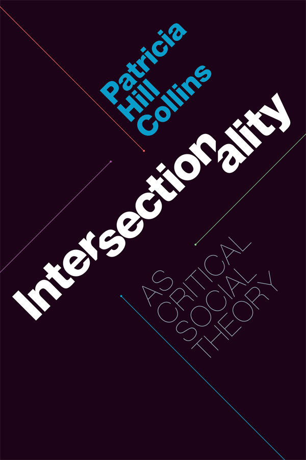

Resource Page
Learn more about implicit bias and intersectionality. Click the links below!
Journals
- The Journal of Intersectionality
- Virtual Special Issue - Intersectionality
- Demarginalizing the Intersection of Race and Sex

A scholarly journal exploring how race, gender, and other social categories interact to shape experiences of oppression and privilege.
A collection of research articles on intersectionality from The European Journal of Women’s Studies, highlighting key theoretical and empirical contributions.

A groundbreaking 1989 article by Kimberlé Crenshaw that introduced the concept of intersectionality in the context of race and gender discrimination.
Books
- On Intersectionality : Essential Writings
- Intersectionality as Critical Social Theory 
- Freedom is a Constant Struggle

>A collection of foundational essays by Kimberlé Crenshaw, tracing the development of intersectionality as a legal and social theory.
A book by Patricia Hill Collins that explores intersectionality as a framework for understanding power, identity, and social justice.
A collection of essays and speeches by Angela Davis, discussing intersectionality in activism, feminism, and global struggles for justice.
Videos
- What is Intersectionality?
- The Urgency of Intersectionality
- #APeoplesJourney: African American Women and the Struggle for Equality
A short animated video explaining the concept of intersectionality and how overlapping identities affect experiences of discrimination.
A TED Talk by Kimberlé Crenshaw, highlighting real-world examples of how intersectionality impacts justice and social movements.
idk
Podcasts
- Intersectionality Matters!
- Code Switch - Race. In Your Face
- Secure the Seat

Hosted by Kimberlé Crenshaw, this podcast explores how intersectionality shapes issues like race, gender, politics, and activism.

An NPR podcast discussing race, culture, and identity in the U.S., often using an intersectional lens.

A podcast by Minda Harts focusing on career advancement for women of color, emphasizing workplace intersectionality and allyship.